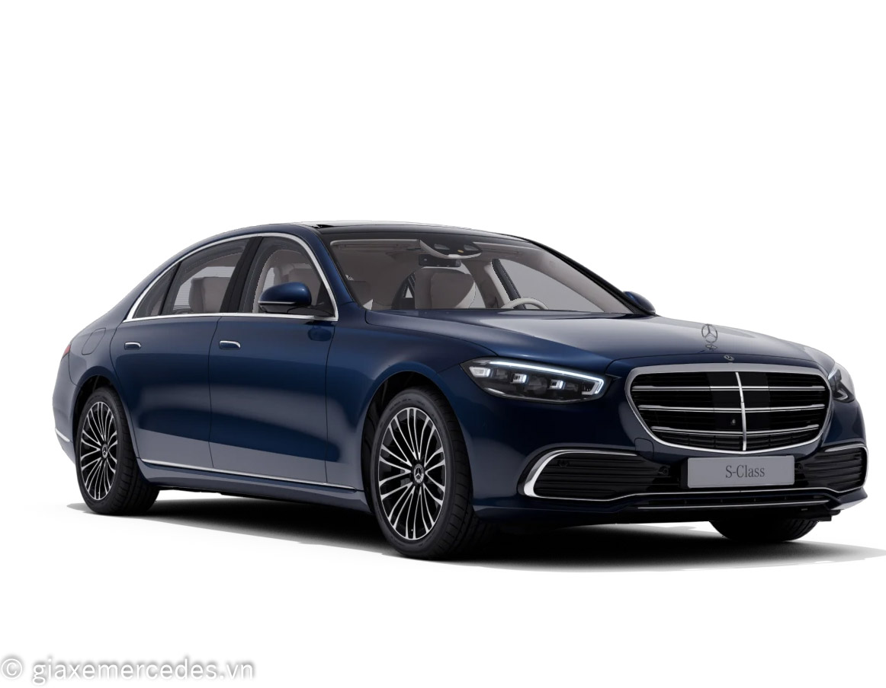
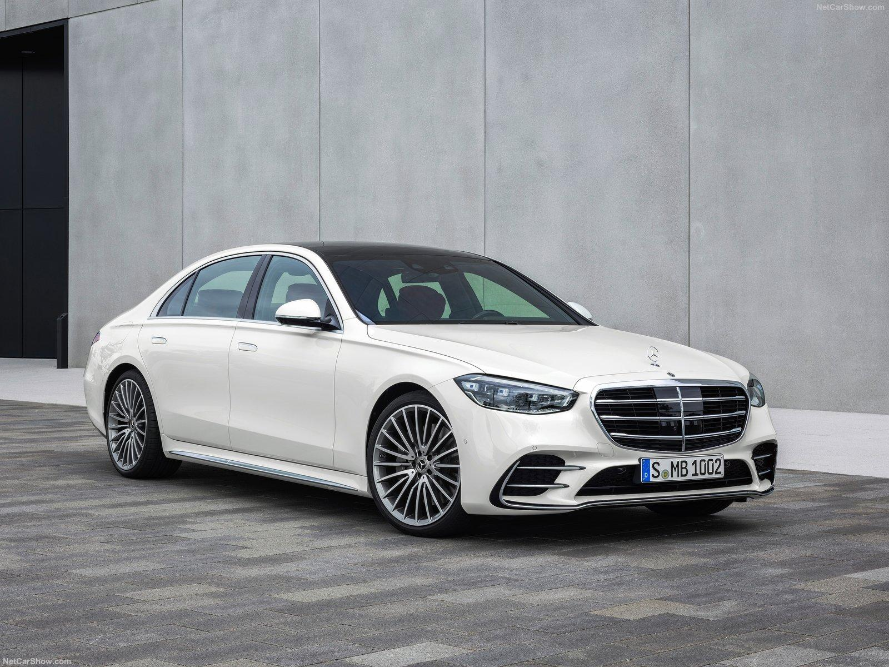
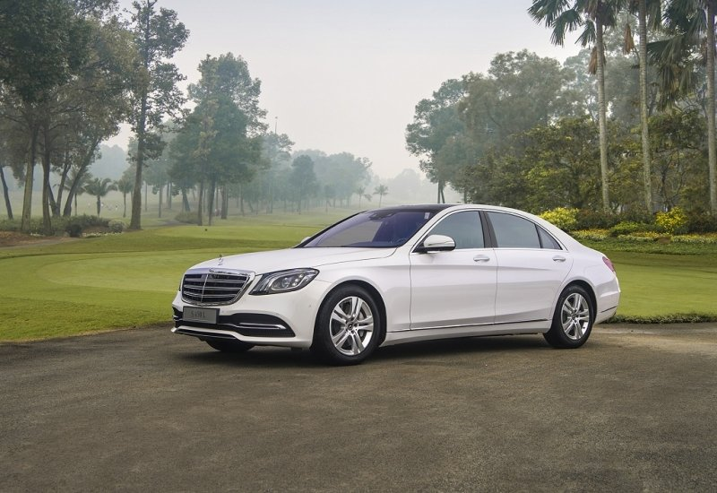
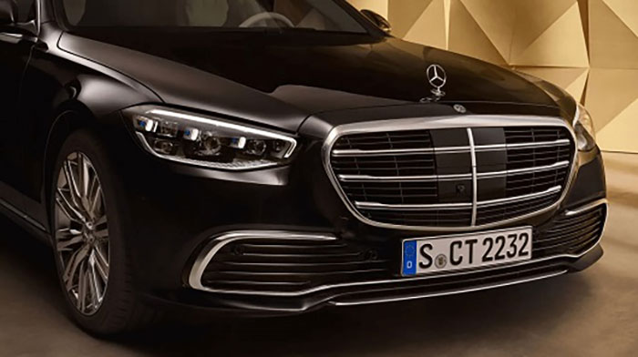
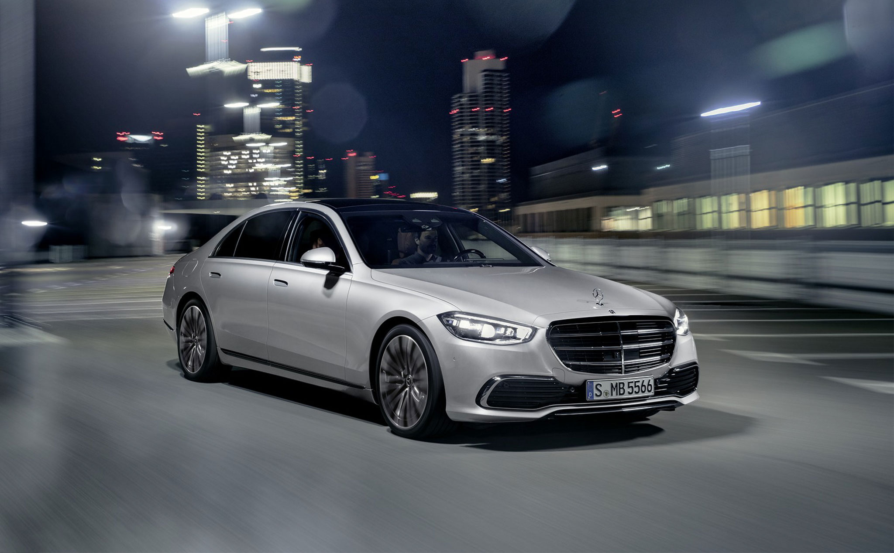
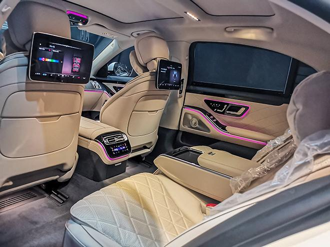

Mercedes-Benz S 450 L mới chính thức ra mắt khách hàng thị trường Việt Nam vào tháng 11/2021. Với những cập nhật và thay đổi mới so với phiên bản tiền nhiệm, Mercedes-Benz S 450 L hứa hẹn sẽ giúp dòng S-Class khiến các đối thủ phải e dè cũng như tiếp tục dẫn đầu trong phân khúc.
S-Class là dòng xe thuộc phân khúc Sedan hạng sang cỡ lớn của Mercedes-Benz. Được phát triển dựa trên phiên bản tiền nhiệm Ponton ra mắt vào năm 1954, đến năm 1972, dòng xe này chính thức được đổi tên thành S-Class. Trải qua 7 thế hệ bao gồm: W116 (1972 – 1980), W126 (1980 – 1991), W140 / C140 (1991 – 1998), W220 (1998 – 2005), W221 (2006 – 2013), W222 (2014 – 2020) và nay là W223, dòng Sedan hạng sang này vẫn là sự lựa chọn hàng đầu của các doanh nhân và chính khách nổi tiếng trên thế giới.
Vừa qua, Mercedes-Benz Vietnam Virtual Show 2021 – BEYOND đã chính thức diễn ra, thu hút nhiều sự quan tâm của khách hàng và cả giới chuyên gia. Trong sự kiện lần này, Mercedes-Benz S 450 L là một trong hai phiên bản mới nhất của S-Class được trình làng (phiên bản còn lại là Mercedes-Benz S 450 L Luxury). Qua những hình ảnh đầu tiên có thể thấy, không chỉ cải tiến trong thiết kế, các tiện nghi và khả năng vận hành của xe cũng sở hữu những nâng cấp vượt bậc so với phiên bản tiền nhiệm.
Vẫn sử dụng ngôn ngữ thiết kế Sensual Purity (Sự thuần khiết gợi cảm) đặc trưng, cùng các thông số Dài x Rộng x Cao lần lượt là 5300 x 1937 x 1503 (mm), tổng quan Mercedes-Benz S 450 L toát lên sự cuốn hút ngay từ ánh nhìn đầu tiên. Ở phần đầu xe, biểu tượng “ngôi sao 3 cánh” của hãng vẫn được đặt đầy kiêu hãnh trên nắp capo. Với lưới tản nhiệt, Mercedes-Benz S 450 L đã thay mới bằng loại 4 nan đơn: 3 nan nằm ngang và 1 nan nằm dọc mạ chrome sáng bóng.
So với phiên bản trước, thiết kế của cụm đèn pha Mercedes-Benz S 450 L trông sắc sảo hơn, tăng vẻ thời thượng cho xe. Nhờ ứng dụng công nghệ Multibeam-Led, đèn pha của xe không chỉ có khả năng chiếu sáng lên đến 650m khi trời tối mà còn có tính năng bật/tắt từng vùng của đèn pha một cách chủ động vô cùng độc đáo, tránh gây chói mắt cho những phương tiện di chuyển cùng chiều cũng như ở chiều ngược lại.
Ở phiên bản mới này, hãng cũng đã nâng cấp động cơ trở nên mạnh mẽ hơn. Theo đó Mercedes-Benz S 450 L sử dụng động cơ I6 với dung tích công tác 2999cc, cho ra công suất cực đại đạt 270 kW [367 hp] tại 5500 – 6100 vòng/phút và mô-men xoắn cực đại đạt 500 Nm tại 1600 – 4500 vòng/phút. Song song đó, xe cũng sử dụng hộp số tự động 9 cấp 9G-TRONIC cùng dẫn động cầu sau. Nhờ được nâng cấp động cơ, Mercedes-Benz S 450 L đã rút ngắn thời gian tăng tốc từ 0 – 100 km/h chỉ trong vòng 5,3 giây, vận tốc tối đa đạt 250km/h. Không những thế, khi sử dụng cụm chuyển đổi DYNAMIC SELECT, khách hàng dễ dàng lựa chọn hoặc thiết lập chế độ lái phù hợp với bản thân như: Eco, Comfort, Sport, Individual. Hơn thế nữa, Mercedes-Benz S 450 L mới còn được trang bị động cơ EQ Boost giúp xe có thêm sức mạnh khi cần thiết, cũng như giúp xe khởi động một cách êm dịu hơn. Đồng thời, khi người lái đang chạy trớn (Gliding Mode) và chuyển sang chế độ Eco, tính năng này cho phép xe tạm ngắt động cơ xăng để giảm tiêu thụ nhiên liệu.
Một trong những nguyên nhân giúp cho S-Class cũng như Mercedes-Benz S 450 L được các chuyên gia đánh giá cao chính là nằm ở yếu tố an toàn. Những công nghệ an toàn hàng đầu không chỉ giúp khách hàng lái xe an toàn hơn mà còn giúp giảm thiểu tối đa thương vong trong và cả sau khi xảy ra tai nạn. Trong đó nổi bật hệ thống túi khí cho hàng ghế sau – đây trang bị an toàn của ô tô lần đầu xuất hiện trên thế giới.
Những tính năng và công nghệ hỗ trợ lái xe an toàn khác trên Mercedes-Benz S 450 L bao gồm:
Mercedes-Benz S 450 L mang đến hàng loạt các công nghệ giúp khách hàng giải trí hoặc xử lý công việc ngay trên xe. Bên cạnh hệ thống giải trí đa phương tiện thế hệ mới MBUX với màn hình OLED 12.8 inch, mẫu xe này còn cung cấp các tiện nghi công nghệ khác như hệ thống giải trí cao cấp cho hàng ghế sau MBUX High-End, 2 tai nghe không dây cao cấp, hệ thống âm thanh cao cấp Burmester® 3D surround mang đến âm thanh chân thật sống động,…
Ngoài công nghệ, Mercedes-Benz S 450 L còn trang bị các tiện nghi đẳng cấp ngay trên khoang xe như chức năng massage cao cấp cho hàng ghế sau, tựa tay trung tâm có ngăn để đồ và khay để cốc, ghế thương gia với đệm đỡ bắp đỡ chân có tính năng massage, điều hòa khí hậu 4 vùng tự động THERMOTRONIC, hệ thống sưởi và thông gió cho cả 2 hàng ghế, kính xe cách nhiệt và cách âm để đảm bảo sự riêng tư,…